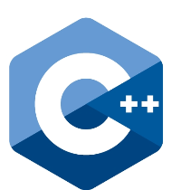

C++ and its related languages like C and C# are extremely useful programing languages used for making all kinds of programs. Many of the world's most popular games and game engines use C++ or C#, and it has tons of other applications too. Many of the most popular websites in the world like google and youtube use C++ programs in their servers.